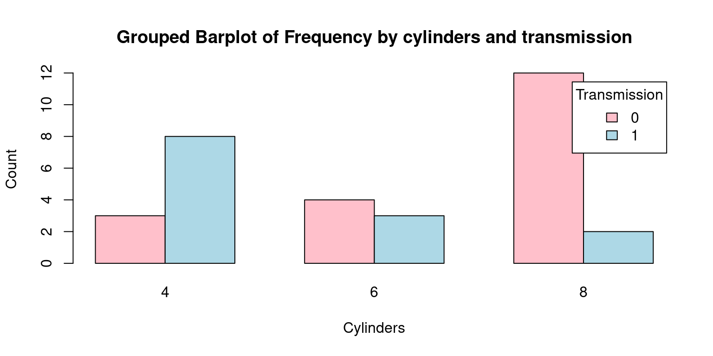
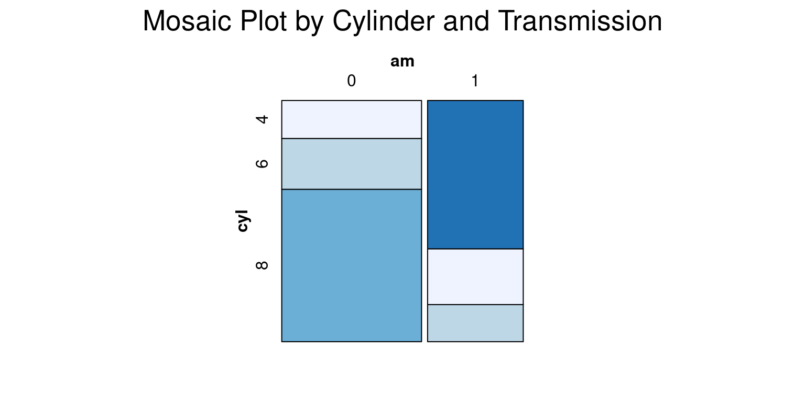

# Load the required libraries, suppressing annoying startup messages
library(dplyr, quietly = TRUE, warn.conflicts = FALSE)
library(tibble, quietly = TRUE, warn.conflicts = FALSE)
# Read the mtcars dataset into a tibble called tb
data(mtcars)
tb <- as_tibble(mtcars)
# Convert relevant columns into factor variables
tb$cyl <- as.factor(tb$cyl) # cyl = {4,6,8}, number of cylinders
tb$am <- as.factor(tb$am) # am = {0,1}, 0:automatic, 1: manual transmission
tb$vs <- as.factor(tb$vs) # vs = {0,1}, v-shaped engine, 0:no, 1:yes
tb$gear <- as.factor(tb$gear) # gear = {3,4,5}, number of gears
# Directly access the data columns of tb, without tb$mpg
attach(tb)Bivariate Categorical data (Part 1 of 2)
Chapter 8.
Exploring Bivariate Categorical Data
This chapter explores how to summarize and visualize Bivariate, categorical data. It builds on the previous chapter, which taught how to summarize and visualize univariate, categorical data.
Bivariate categorical data analysis involves examining the relationship between two categorical variables. For instance, we might examine the relationship between a person’s gender (male, female, or non-binary) and whether they own a car (yes or no). By exploring these two categorical variables together, we can discern potential correlations or associations.
As an extension, multivariate analysis involves the simultaneous observation and analysis of more than two variables. We will study multivariate data in the next chapter.
Contingency Table: A contingency table, also known as a cross-tabulation or crosstab, is a type of table in a matrix format that displays the frequency distribution of the variables. In the case of a univariate factor variable, a contingency table is essentially the same as a frequency table, as there’s only one variable involved. In more complex analyses involving two or more variables, contingency tables provide a way to examine the interactions between the variables. [1]
Data: Suppose we run the following code to prepare the
mtcarsdata for subsequent analysis and save it in a tibble calledtb.
Frequency Tables for Bivariate Categorical Data
As an illustration, let us investigate the bivariate relationship between the number of cylinders (
cyl) and whether the car has an automatic or manual transmission, (am=1for manual,am=0for automatic). [2]table(): We can use this function to generate a contingency table of these two variables.
# Generate a frequency table for the 'cyl' (number of cylinders)
# and 'am' (transmission type) variables from the mtcars dataset.
table(cyl, am) am
cyl 0 1
4 3 8
6 4 3
8 12 2In this code, a two-way frequency table of
amandcylis created using thetable()function. The frequency of each grouping of categories is displayed in the table that results. As an illustration, there are 8 cars with a manual gearbox and 4 cylinders.addmargins(): Theaddmargins()function is used to add row and/or column totals to a table.
# Generate a contingency table for 'cyl' and 'am' from mtcars,
# and add total counts for each row and column.
table(cyl, am) %>%
addmargins() am
cyl 0 1 Sum
4 3 8 11
6 4 3 7
8 12 2 14
Sum 19 13 32# Create a contingency table for 'cyl' (cylinders) and '
# am' (transmission type) in mtcars, then use
# addmargins() with margin 1 to add row sums to the table.
table(cyl, am) %>%
addmargins(1) am
cyl 0 1
4 3 8
6 4 3
8 12 2
Sum 19 13- In this variation, the
1in the function call indicates that we want to add row totals. So, this command adds the totals (Sum) of each row as a row in the contingency table.
# Generate a contingency table for 'cyl' (cylinders) and 'am' (transmission type)
# in mtcars,and use addmargins(2) to add column sums to the table.
table(cyl, am) %>%
addmargins(2) am
cyl 0 1 Sum
4 3 8 11
6 4 3 7
8 12 2 14- In this variation, the
2specifies that we want to add column totals. Thus, it adds the totals (Sum) of each column to the contingency table.
xtabs(): This function provides a more versatile way to generate cross tabulations or contingency tables. It differs from thetable()function by allowing the use of weights and formulas. [2]Here’s an example of its use:
# Use xtabs to create a cross-tabulation of the number of cylinders ('cyl')
# and transmission type ('am') in the 'tb' dataset.
xtabs(~ cyl + am,
data = tb) am
cyl 0 1
4 3 8
6 4 3
8 12 2In the code, we have used
xtabs()to construct a cross-tabulation ofamandcyl.The syntax
~ cyl + amis interpreted as a formula, signifying that we aim to cross-tabulate these variables. The output is a table akin to what we obtain withtable(), but with the added advantage of accommodating more intricate analyses.An important advantage of
xtabs()overtable()is its superior handling of missing values orNA; it doesn’t automatically exclude them, which is beneficial when dealing with real-world data that often includes missing values. [2]
ftable(): This function is a powerful tool that offers an advanced way to create and display contingency tables. [2]Here’s an example of its use:
# Create a flat contingency table for the 'cyl' (number of cylinders)
# and 'am' (transmission type) columns in the 'tb' dataset.
ftable(tb$cyl, tb$am) 0 1
4 3 8
6 4 3
8 12 2In this code, we’ve employed the
ftable()function to create a contingency table ofamandcyl. The output of this function is similar to what we get usingtable(), but it presents the information in a flat, compact layout, which can be particularly helpful especially when dealing with more than two variables.One key advantage of
ftable()is that it creates contingency tables in a more readable format when dealing with more than two categorical variables, making it easier to visualize and understand complex multivariate relationships.Like
xtabs(),ftable()also handles missing values orNAeffectively, making it a reliable choice for real-world data that might contain missing values. [2]
- We can also use
group_by()andsummarize()functions from packagedplyrto generate contingency tables. [3]
# Load the 'dplyr' package
library(dplyr, quietly = TRUE, warn.conflicts = FALSE)
# Group data by the 'cyl' (cylinders) and 'am' (transmission type) columns;
# Then summarise the grouped data to count the frequency in each group
tb %>%
group_by(cyl, am) %>%
summarise(Frequency = n())`summarise()` has grouped output by 'cyl'. You can override using the `.groups`
argument.# A tibble: 6 × 3
# Groups: cyl [3]
cyl am Frequency
<fct> <fct> <int>
1 4 0 3
2 4 1 8
3 6 0 4
4 6 1 3
5 8 0 12
6 8 1 2Proportions Table for Bivariate Categorical Data
prop.table(): This function is an advantageous tool to understand the relative proportions rather than raw frequencies. It converts a contingency table into a table of proportions. [2]Here is how we could utilize this function:
# Create a frequency table
freq <- table(cyl, am)
# Convert the frequency table to a proportion table
prop <- prop.table(freq)
# Round the proportions in the table to three decimal places
round(prop, 3) am
cyl 0 1
4 0.094 0.250
6 0.125 0.094
8 0.375 0.062In this code, we first generate a frequency table with the
table()function, usingcylandamas our variables. Then, we employ theprop.table()function to convert this frequency table (freq_table) into a proportions table (prop_table).This resulting
prop_tablereveals the proportion of each combination ofcylandamcategories relative to the total number of observations. This can provide insightful context, allowing us to see how each combination fits into the overall distribution. For instance, we could learn what proportion of cars in our dataset have 4 cylinders and a manual transmission.Here is a more efficient method of writing the above code using the pipe operator. [3]
table(cyl, am) %>%
prop.table() %>% # Convert the frequency table to a table of proportions
round(3) # Round the values to 3 DP am
cyl 0 1
4 0.094 0.250
6 0.125 0.094
8 0.375 0.062- We can alternately use package
dplyrto showcase the frequency and proportions in tabular form, instead of a contingency table. [3]
# Load dplyr for data manipulation
library(dplyr)
# Group 'tb' by 'cyl' and 'am', calculate group frequencies,
# and add proportions.
# .groups = "drop" prevents the creation of an additional grouping layer
tb %>%
group_by(cyl, am) %>%
summarise(Frequency = n(),
.groups = "drop"
) %>%
mutate(Proportion = Frequency / sum(Frequency))# A tibble: 6 × 4
cyl am Frequency Proportion
<fct> <fct> <int> <dbl>
1 4 0 3 0.0938
2 4 1 8 0.25
3 6 0 4 0.125
4 6 1 3 0.0938
5 8 0 12 0.375
6 8 1 2 0.0625In this code,
group_by(cyl, am)groups the data bycylandam,summarise(Frequency = n())calculates the frequency for each group,.groups = "drop"drops the grouping structure.mutate(Proportion = Frequency / sum(Frequency))calculates the proportions by dividing each frequency by the total sum of frequencies.The
mutate()function adds a new column to the dataframe, keeping the original data intact.Percentages and Rounding: If we wanted to display the proportions as percentages, we could round-off the proportion up to 4 decimal places, as follows: [3]
# Load the dplyr package for data manipulation tasks
library(dplyr)
# 1. Group by 'cyl' (cylinders) and 'am' (transmission type)
# 2. Summarise each group to count its frequency,
# and drop the group structure
# 3. Add a new column 'Percentage'
tb %>%
group_by(cyl, am) %>%
summarise(Frequency = n(), .groups = "drop") %>%
mutate(Percentage = 100 * round(Frequency / sum(Frequency), 4))# A tibble: 6 × 4
cyl am Frequency Percentage
<fct> <fct> <int> <dbl>
1 4 0 3 9.38
2 4 1 8 25
3 6 0 4 12.5
4 6 1 3 9.38
5 8 0 12 37.5
6 8 1 2 6.25Margins in Proportions Tables
Different proportions provide various perspectives on the relationship between categorical variables in our dataset. We can calculate the i) Proportions for Each Cell; (ii) Row-Wise* Proportions; (iii) Column-Wise Proportions. This forms a crucial part of exploratory data analysis. [2]
Proportions for Each Cell: This calculates the ratio of each cell to the overall total.
# Generate a table of proportions from the 'cyl' and 'am' variables,
# add total margins, round to 3 decimal places, and convert to percentages.
table(cyl, am) %>%
prop.table() %>%
addmargins() %>%
round(3) %>%
`*`(100) am
cyl 0 1 Sum
4 9.4 25.0 34.4
6 12.5 9.4 21.9
8 37.5 6.2 43.8
Sum 59.4 40.6 100.0- Row-Wise Proportions: Here, we compute the proportion of each cell relative to the total of its row.
# Proportion table from 'cyl' and 'am', calculate row-wise proportions,
# add column margins, round to 3 DP, and convert to percentages.
table(cyl, am) %>%
prop.table(1) %>% # Row-wise proportions
addmargins(2) %>% # Add sums for each column
round(3) %>% # Round to three decimal places
`*`(100) # Convert to percentage am
cyl 0 1 Sum
4 27.3 72.7 100.0
6 57.1 42.9 100.0
8 85.7 14.3 100.0- Column-Wise Proportions: Here, we determine the proportion of each cell relative to the total of its column.
# Proportion table from 'cyl' and 'am', calculate column-wise proportions,
# add row margins, round to 3 DP, and convert to percentages.
table(cyl, am) %>%
prop.table(2) %>% # Column-wise proportions
addmargins(1) %>% # Add sums for each row
round(3) %>% # Round to three decimal places
`*`(100) # Convert to percentage am
cyl 0 1
4 15.8 61.5
6 21.1 23.1
8 63.2 15.4
Sum 100.0 100.0Visualizing Bivariate Categorical Data
Grouped Barplots and Stacked Barplots serve as powerful tools for representing and understanding bivariate categorical data, where both variables are categorical in nature.
Grouped Barplots, often referred to as side-by-side bar plots, illustrate the relationship between two categorical variables by placing bars corresponding to one category of a variable next to each other, differentiated by color or pattern. This layout facilitates a direct comparison between categories of the second variable. Grouped bar plots are particularly effective when we are interested in comparing the distribution of a categorical variable across different groups
On the other hand, stacked bar plots present a similar relationship between two categorical variables, but rather than aligning bars side by side, they stack bars on top of one another. This results in a single bar for each category of one variable, with the length of different segments in each bar corresponding to the counts or proportions of the categories of the other variable. Stacked bar plots are advantageous when we’re interested in the total size of groups as well as the distribution of a variable across groups. [1]
Grouped Barplot
# Frequency table with counts grouped by the number of cylinders ('cyl')
# and transmission type ('am')
freq <- table(cyl, am)
freq # Display the created frequency table am
cyl 0 1
4 3 8
6 4 3
8 12 2# Generate a grouped bar plot using the frequency table
barplot(freq,
beside = TRUE, # Place bars for different groups side by side
col = c("pink", "lightblue", "green"), # Assign colors to each group
xlab = "Transmission", # Label for the x-axis, transmission type
ylab = "Frequency", # Label for the y-axis, the count/frequency
main = "Grouped Barplot by transmission and cylinders",
legend.text = rownames(freq), # Add a legend using row names
args.legend = list(title = "Cylinders")) # Set the title- Discussion:
freq: This is the dataset being visualized, which we anticipate to be a contingency table ofamandcylvariables.beside= TRUE: This argument is specifying that the bars should be positioned next to each other, which means that for each level ofam, there will be a distinct bar for each level ofcyl.col = c("pink", "lightblue", "green"): Here, we are setting the colors of the bars to pink, light blue, and green.xlab = "Transmission"andylab = "Frequency": These arguments set the labels for the x and y-axes, respectively.main= “Grouped Barplot of Frequency by transmission and cylinders”: This argument assigns a title to the plot.legend.text = rownames(freq): This creates a legend for the plot, using the row names of freq as the legend text.args.legend = list(title = "Cylinders"): This sets the title of the legend to “Cylinders”. [3]
- Consider this alternate barplot.
# Table with counts grouped by transmission ('am') and cylinders ('cyl')
freqInverted <- table(tb$am, tb$cyl)
freqInverted # Display the created frequency table
4 6 8
0 3 4 12
1 8 3 2# Generate a bar plot using the frequency table
barplot(freqInverted,
beside = TRUE, # Place bars for cylinder counts side by side
col = c("pink", "lightblue"), # Assign colors
xlab = "Cylinders", # Label for the x-axis,
ylab = "Count", # Label for the y-axis,
main = "Grouped Barplot of Frequency by cylinders and transmission",
legend.text = rownames(freqInverted), # Add a legend
args.legend = list(title = "Transmission")) 
- Discussion: The most significant differences from the previous Grouped Barplot and this one are as follows. [3]
freqInverted: The contingency table’s axes have been swapped or inverted. Hence, the table’s rows now correspond to the am variable (transmission), and its columns correspond to thecylvariable (cylinders).xlab = "Cylinders"andylab = "Count": These arguments set the labels for the x and y-axes, respectively. This is a departure from the previous plot where the x-axis represented ‘Transmission’. In this case, the x-axis corresponds to ‘Cylinders’.legend.text = rownames(freqInverted)andargs.legend = list(title = "Transmission"): In the legend, the roles of ‘Transmission’ and ‘Cylinders’ are reversed compared to the previous plot.To put it succinctly, the main distinction between the two plots is the swapping of the roles of the
cylandamvariables. In the second plot, ‘Cylinders’ is on the x-axis, which was occupied by ‘Transmission’ in the first plot. This perspective shift helps to understand the data in a different light, adding another dimension to our exploratory data analysis. [3]
- Stacked Barplot
# Generate a frequency table by number of cylinders ('cyl') and transmission ('am')
freq <- table(tb$cyl, tb$am)
freq # Display the frequency table
0 1
4 3 8
6 4 3
8 12 2# Create a Stacked bar plot using the frequency table
barplot(freq,
beside = FALSE, # Bars stacked on top of each other
col = c("pink", "lightblue", "green"), # Assign colors
xlab = "Transmission", # Label for the x-axis
ylab = "Frequency", # Label for the y-axis
main = "Stacked Barplot by transmission and cylinders",
legend.text = rownames(freq), # Add a legend
args.legend = list(title = "Cylinders")) # title of the legendThere are a few key differences between this Stacked Barplot and the original Grouped Barplot:
beside = FALSE: In the original code,beside = TRUEwas used to generate a grouped bar plot, where each set of bars corresponding to each transmission type (automatic or manual) were displayed side by side. However, withbeside = FALSE, we obtain a stacked bar plot. In this plot, the bars corresponding to each cylinder category (4, 6, or 8 cylinders) are stacked on top of one another for each transmission type.main = "Stacked Barplot of Frequency by transmission and cylinders": The title of the plot also reflects this change, mentioning now that it’s a stacked bar plot instead of a grouped bar plot.Finally, here is a Stacked Barplot, corresponding to the second Grouped Barplot discussed above. [3]
# Generate a frequency table by transmission ('am') and cylinders ('cyl')
freqInverted <- table(tb$am, tb$cyl)
freqInverted # Display the frequency table
4 6 8
0 3 4 12
1 8 3 2# Create a Stacked bar plot using the frequency table
barplot(freqInverted,
beside = FALSE, # Configure bars to be stacked
col = c("pink", "lightblue"), # Assign colors
xlab = "Cylinders", # Set the x-axis label to 'Cylinders'
ylab = "Count", # Set the y-axis label to 'Count'
main = "Stacked Barplot by cylinders and transmission",
legend.text = rownames(freqInverted), # Add a legend
args.legend = list(title = "Transmission")) - The grouped bar plot helps in comparing the number of cylinders across transmission types side by side, while the stacked bar plot gives an overall comparison in terms of total number of cars, with the frequency of each cylinder type stacked on top of the other. The choice between a stacked and a grouped bar plot would depend on the specific aspects of the data one would want to highlight. Taken together, grouped and stacked bar plots offer visually appealing and intuitive methods for presenting bivariate categorical data, allowing us to understand and analyze relationships between categorical variables in a meaningful way. [3]
Using ggplot2
Grouped Barplot using ggplot2
- We demonstrate how to create a Grouped Barplot of Car Count by transmission and cylinders
- Set up the data
# Convert the table of cylinder and transmission counts to a data frame
freq <- table(tb$cyl, tb$am)
df <- as.data.frame.table(freq)
# Rename columns for clarity
names(df) <- c("Cylinders", "Transmission", "Frequency")
# Convert 'Cylinders' to a factor for categorical analysis
df$Cylinders <- factor(df$Cylinders)
# Convert 'Transmission' to a factor
# and label the categories as 'Automatic' and 'Manual'
df$Transmission <- factor(df$Transmission,
labels = c("Automatic", "Manual"))- Create a Grouped Barplot using ggplot2 [4]
library(ggplot2)
Attaching package: 'ggplot2'The following object is masked from 'tb':
mpg# Create a Grouped Barplot
ggplot(df,
aes(x = Transmission,
y = Frequency,
fill = Cylinders)) + # Set up the aesthetics
geom_bar(stat = "identity",
# create bars, 'identity' to use direct values from data
position = position_dodge()) +
# Dodge position to place bars side by side
geom_text(aes(label=Frequency),
# Add text labels on top of bars for frequency values
vjust=1.6, # Adjust vertical position of labels
color="black", # Set label color
position = position_dodge(0.9),
# Dodge position for the labels to align with the bars
size=5) + # Set size of the text labels
labs(x = "Transmission", y = "Frequency", # Set labels for x and y axes
fill = "Cylinders", # Legend title
title = "Grouped Barplot of Car Count by transmission and cylinders") +
scale_fill_manual(values = c("pink", "lightblue", "green")) # Manually set colors for each cylinder category- Discussion:
We first convert the frequency table into a data frame that
ggplot2can use. This involves converting the table to a data frame and then reshaping it to long format.We then use the
ggplot()function to initiate the plot and specify the aesthetic mappings. Here, we map ‘Transmission’ to the x-axis, ‘Frequency’ to the y-axis, and ‘Cylinders’ to the fill aesthetic which controls the color of the bars.geom_bar()withstat = "identity"is used to add the bar geometry to the plot.position = position_dodge()ensures the bars are placed side by side, which creates the grouped effect.labs()is used to add labels to the plot.scale_fill_manual()allows us to manually specify the colors for the bars.We demonstrate how to create a Grouped Barplot of Car Count by cylinders and transmission
- Set up the data
# Frequency table by transmission ('am') and number of cylinders ('cyl')
freqInverted <- table(tb$am, tb$cyl)
# Convert the frequency table to a data frame for better data manipulation
df_inverted <- as.data.frame.table(freqInverted)
# Rename columns to be more descriptive
names(df_inverted) <- c("Transmission", "Cylinders", "Count")
# Convert 'Transmission' to a factor with meaningful labels for clarity
df_inverted$Transmission <- factor(df_inverted$Transmission,
labels = c("Automatic", "Manual"))
# Convert 'Cylinders' to a factor to treat it as a categorical variable
df_inverted$Cylinders <- factor(df_inverted$Cylinders)- Create a Grouped Barplot using ggplot2 [4]
# Create the Grouped Barplot using ggplot2
ggplot(df_inverted,
aes(x = Cylinders,
y = Count,
fill = Transmission)) + # Define aesthetics
geom_bar(stat = "identity", # Create bar plot
position = position_dodge()) + # Dodge position for grouped bars
geom_text(aes(label = Count), # Add text labels (Count) on each bar
vjust = 1.6, # Vertically adjust text to sit above the bars
color = "black", # Set text color to black for readability
position = position_dodge(0.9), # Adjust text position
size = 5) + # Set text size
labs(x = "Cylinders",
y = "Count",
fill = "Transmission", # Label
title = "Grouped Barplot of Frequency by cylinders and transmission") +
scale_fill_manual(values = c("pink", "lightblue")) # Manually set the colors for the 'Transmission' categories- Discussion:
The
geom_text()function is used in the same way as in the previous example to add frequency labels to the bars.The
scale_fill_manual()function is used to specify the colors for the different transmission types.
Stacked Barplots using ggplot2
We demonstrate how to create a Stacked Barplot of Car Count by cylinders and transmission
To create a stacked bar plot with
ggplot2, we apply thegeom_bar()function but without the dodge positioning this time, since we want the bars stacked. [4]
- Create a Stacked Barplot using ggplot2
library(ggplot2)
# Create the Stacked Barplot using ggplot2
ggplot(df, aes(x = Transmission,
y = Frequency,
fill = Cylinders)) + # Set up plot aesthetics
geom_bar(stat = "identity") + # Create stacked bars
geom_text(aes(label = Frequency), # Add frequency labels
position = position_stack(vjust = 0.5), # Vertically center
color = "black", # Set label color to black for contrast
size = 3.5) + # Adjust text size for visibility
labs(x = "Transmission", y = "Frequency", # Set x and y-axis labels
fill = "Cylinders", # Legend title for color fill
title = "Stacked Barplot of Frequency by transmission and cylinders") +
scale_fill_manual(values = c("pink", "lightblue", "green")) # Manually assign colors to different cylinder counts- Discussion:
The
geom_bar(stat = "identity")is used to create a stacked bar plot.The
scale_fill_manual()function is used to specify the colors for the different cylinder categories. Again, we changed the order of the Transmission and Cylinders columns to suit this specific plot.The
geom_text()function is used to add the labels to the stacked bars. We use position_stack() to position the labels in the middle of the stacked sections.The
vjustargument inside position_stack() controls the vertical positioning of the labels, and 0.5 puts them in the middle.As before,
scale_fill_manual()allows us to specify the colors for the different cylinder categories.[4]
Mosaic Plots for Bivariate Categorical Data
A mosaic plot is a graphical method for visualizing data from two or more qualitative variables / categorical data. It is a form of area plot that can provide a visual representation of the frequency or proportion of the different categories within the variables. [5]
The following code generates a mosaic plot from a contingency table of two variables:
cyl(cylinders) andam(transmission).
# Create a mosaic plot
mosaicplot(table(tb$cyl, tb$am),
main = "Mosaic of Cylinder count and Transmission type",
xlab = "Cylinders (cyl)", # Label for the x-axis
ylab = "Transmission (am)") # Label for the y-axis - In a mosaic plot, we interpret two categorical variables on two axes. [5]
The width of each section on one axis signifies the proportion of that particular category in our dataset.
Conversely, the height of a section on the other axis illustrates the proportion of that category, contingent on the specific category from the first variable.
Therefore, the area of each rectangle directly corresponds to the frequency or proportion of observations falling within that specific combination of categories.
By combining both the height and width of the rectangles, a mosaic plot gives us a visual representation of the joint distribution of the two categorical variables. It helps us to identify patterns, associations, and dependencies between the two variables. [5]
Discussion:
The
table()function is used to create a contingency table of thecylandamcolumns of thetbtibble. This contingency table represents the counts of all combinations ofcylandamin the data.The
mosaicplot()function then creates a mosaic plot from this contingency table. Themain,xlab, andylabarguments are used to set the main title, x-axis label, and y-axis label of the plot, respectively.This code gives a mosaic plot that visualizes the distribution of the number of cylinders by the type of transmission. Each block’s width in the plot would be proportional to the number of cylinders, and the height would be proportional to the transmission type.
They can be used to identify breaks in independence or test hypotheses regarding the connections between the variables. They are especially helpful for examining interactions between two or more categorical variables.
The
vcdpackage, short for Visualizing Categorical Data, provides alternative visual and analytical methods for categorical data. A mosaic plot is created from the variablescyl(cylinders) andam(transmission type) using themosaic()function. [5]
# Load the vcd package for categorical data visualization
library(vcd)Loading required package: grid# Create a mosaic plot of cylinder count (cyl) vs. transmission (am)
vcd::mosaic(~ cyl + am,
data = tb,
main = "Mosaic Plot by Cylinder and Transmission") - Discussion:
library(vcd)is used to import thevcdpackage which includes themosaic()function that is superior to the base Rmosaicplot()in its handling of labeling and legends.mosaic(\~ cyl + am, data = tb, main = "Mosaic of Cylinder count and Transmission type")creates a mosaic plot.In this command, the formula
~ cyl + amtells R to plotcylagainstam. The argumentdata = tbspecifies that the variables for the plot come from thetbdata frame. Themainargument sets the title of the plot.
- We can customize the shading color of the mosaic plot by setting the color using the
colargument inside themosaic()function. To specify shades of blue, we can use theRColorBrewerpackage and itsbrewer.pal()function to generate a color palette:
# Load necessary packages
library(vcd)
library(RColorBrewer)
# Define the color palette using RColorBrewer
cols <- brewer.pal(4, "Blues")
# Select a palette of 4 shades from the 'Blues' spectrum
# Create a mosaic plot
vcd::mosaic(~ cyl + am,
data = tb,
main = "Mosaic Plot by Cylinder and Transmission",
shade = TRUE, # Apply shading to highlight differences
highlighting = "cyl", # Highlight based on cylinder count
highlighting_fill = cols) # Use the defined colors 
- Discussion:
brewer.pal(4, "Blues")creates a color palette of 4 different shades of blue.highlighting = "cyl"means that the shading will differentiate the categories in the cyl variable.highlighting_fill = colsapplies the cols color palette to the shading.
- We can also recreate the previous mosaic plot using
ggplot2andggmosaicpackages. Here is how to do it:
# Load the packages
library(ggplot2)
library(ggmosaic, quietly = TRUE, warn.conflicts = FALSE) # Load ggmosaic
# Create the mosaic plot using ggplot2 and ggmosaic
ggplot(data = tb) +
geom_mosaic(aes(x = product(cyl, am),
fill = cyl)) +
# Create mosaic plot with 'cyl' and 'am' and fill based on 'cyl'
theme_minimal() + # Use a minimal theme for a cleaner look
labs(title = "Mosaic Plot of Cars by Cylinder count and Transmission type",
x = "Transmission", # Label for the x-axis
y = "Cylinders") + # Label for the y-axis
scale_fill_brewer(palette = "Blues") # Use a color scale from the 'Blues' palette for the fill- Discussion:
geom_mosaic(aes(x = product(cyl, am), fill = cyl))creates the mosaic plot withcylandamas the categorical variables.The
fill = cylpart means that the color fill will differentiate the categories in thecylvariable.theme_minimal()applies a minimal theme to the plot.labs()is used to specify the labels for the plot, including thetitle, x-axis label, and y-axis label.scale_fill_brewer(palette = "Blues")specifies the color palette to be used for the fill color, in this case, a palette of blues.
Summary of Chapter 8 – Bivariate Categorical data (Part 1 of 2)
In this chapter, we delve into an extensive exploration of various methods for visualizing bivariate categorical data using R, which include but are not limited to grouped bar plots, stacked bar plots, and mosaic plots.
An explanation is provided to distinguish between grouped and stacked bar plots, further supported by the inclusion of coding examples and variations in parameters. Both base R functions and the more advanced ggplot2 library serve as instrumental tools to depict these techniques, furnishing readers with a comprehensive understanding of their practical usage. The ggplot2 library further elevates the possibilities by offering enhanced customization capabilities and superior control over aesthetics. Detailed coding examples are presented again to explain both the grouped and stacked bar plots within this library.
The chapter also introduces mosaic plots as another way of visualizing bivariate categorical data and discusses how mosaic plots can provide a visual representation of the frequency or proportion of different categories within variables. The use of the base R mosaicplot() function is exemplified, followed by the demonstration of the mosaic() function in the vcd package and the ggmosaic package, bringing full circle the spectrum of visualizations covered for bivariate categorical data.
References
Categorical Data Analysis:
[1] Agresti, A. (2018). An Introduction to Categorical Data Analysis (3rd ed.). Wiley.
Boston University School of Public Health. (2016). Analysis of Categorical Data. Retrieved from https://sphweb.bumc.bu.edu/otlt/MPH-Modules/BS/R/R6_CategoricalDataAnalysis/R6_CategoricalDataAnalysis2.html
Hair, J. F., Black, W. C., Babin, B. J., & Anderson, R. E. (2018). Multivariate Data Analysis (8th ed.). Cengage Learning.
Sheskin, D. J. (2011). Handbook of Parametric and Nonparametric Statistical Procedures (5th ed.). Chapman and Hall/CRC.
Tang, W., Tang, Y., & Song, X. (2012). Applied Categorical and Count Data Analysis. Chapman and Hall/CRC.
Basic R Programming:
[2] Chambers, J. M. (2008). Software for Data Analysis: Programming with R (Vol. 2, No. 1). Springer.
Crawley, M. J. (2012). The R Book. John Wiley & Sons.
Gardener, M. (2012). Beginning R: The Statistical Programming Language. John Wiley & Sons.
Grolemund, G. (2014). Hands-On Programming with R: Write Your Own Functions and Simulations. O’Reilly Media, Inc.
Kabacoff, R. (2022). R in Action: Data Analysis and Graphics with R and Tidyverse. Simon and Schuster.
Peng, R. D. (2016). R Programming for Data Science (pp. 86-181). Leanpub.
R Core Team. (2020). R: A Language and Environment for Statistical Computing. R Foundation for Statistical Computing. Retrieved from https://www.R-project.org/.
Tippmann, S. (2015). Programming Tools: Adventures with R. Nature, 517(7532), 109-110.
Wickham, H., Çetinkaya-Rundel, M., & Grolemund, G. (2023). R for Data Science. O’Reilly Media, Inc.
Data Visualization:
[3] Chang, W. (2018). R Graphics Cookbook: Practical Recipes for Visualizing Data. O’Reilly Media.
Friendly, M. (2000). Visualizing Categorical Data. SAS Institute.
Healy, K., & Lenard, M. T. (2014). A Practical Guide to Creating Better Looking Plots in R. University of Oregon. Retrieved from https://escholarship.org/uc/item/07m6r
Healy, K. (2018). Data Visualization: A Practical Introduction. Princeton University Press.
Heiberger, R. M., & Robbins, N. B. (2014). Design of Diverging Stacked Bar Charts for Likert Scales and Other Applications. Journal of Statistical Software, 57(5), 1-32. doi: 10.18637/jss.v057.i05.
Lander, J. P. (2019). R for Everyone: Advanced Analytics and Graphics (2nd ed.). Addison-Wesley Data & Analytics Series.
Unwin, A. (2015). Graphical Data Analysis with R. CRC Press.
Wilke, C. O. (2019). Fundamentals of Data Visualization. O’Reilly Media.
ggplot2:
[4] Wickham, H. (2016). ggplot2: Elegant Graphics for Data Analysis. Springer-Verlag New York. ISBN 978-3-319-24277-4. Retrieved from https://ggplot2.tidyverse.org.
Wickham, H., & Grolemund, G. (2016). R for Data Science: Import, Tidy, Transform, Visualize, and Model Data. O’Reilly Media.
Wilkinson, L. (2005). The Grammar of Graphics (2nd ed.). Springer-Verlag.
Mosaic Plot:
[5] Friendly, M. (1994). Mosaic Displays for Multi-Way Contingency Tables. Journal of the American Statistical Association, 89(425), 190-200.
Hartigan, J. A., & Kleiner, B. (1981). Mosaics for Contingency Tables. In Computer Science and Statistics: Proceedings of the 13th Symposium on the Interface (pp. 268-273).
Meyer, D., Zeileis, A., & Hornik, K. (2020). vcd: Visualizing Categorical Data. R Package Version 1.4-8. Retrieved from https://CRAN.R-project.org/package=vcd